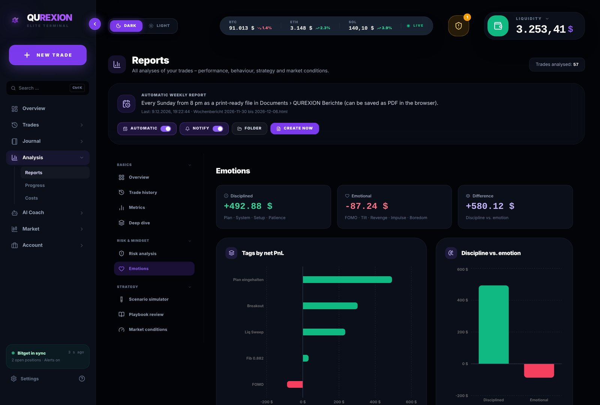
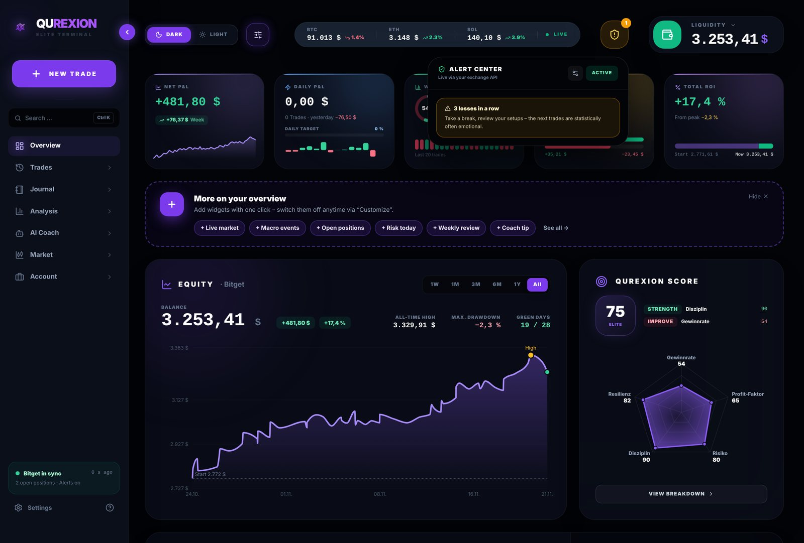
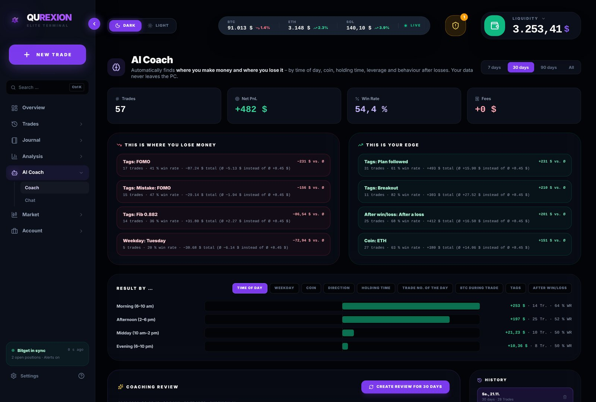

Un diario que trabaja por ti.
Conecta tu exchange una vez – a partir de ahí cada trade llega a tu diario con comisiones y funding, y QUREXION lo convierte en respuestas.
Cada trade se registra solo.
Conecta una vez – ve tus posiciones abiertas en directo; los trades cerrados llegan automáticamente con comisiones, funding y apalancamiento.
- 10 exchanges por API, el resto por importación CSV
- Posiciones cada 5 segundos, sincronización completa cada minuto
- Claves de solo lectura – QUREXION no puede operar ni retirar

Mejora en 20 segundos por trade.
Setup, plan, sensación, lección – QUREXION pregunta brevemente y te muestra lo cerca del mejor precio que cerraste.
- Modo enfoque: pregunta a pregunta, todo con el teclado
- Revisión semanal con 3 conclusiones de tus trades reales
- Objetivos semanales que QUREXION comprueba automáticamente

Encuentra y repite cualquier trade.
Filtra por moneda, dirección, resultado, etiqueta o sensación – y repite cada trade vela a vela con entrada, stop-loss y salida en el gráfico.
- Resultados por etiqueta: qué setup te hace ganar dinero de verdad
- Replay con salida frente al mejor precio
- Tarjetas de trade para compartir – importes ocultos si quieres

Mira qué te cuesta dinero de verdad.
Resultados por día de la semana, hora, moneda y apalancamiento. Disciplina frente a emoción – en dólares.
- 9 informes: historial, métricas, riesgo, emociones, playbook, condiciones de mercado …
- Simulador de escenarios con tus trades reales
- Informe semanal automático listo para imprimir

Avisado antes de que salga caro.
Cuando estás en un trade y pasa algo importante, QUREXION te avisa – con ventana emergente, notificación de Windows y sonido.
- Racha de pérdidas, stop-loss ausente, límite diario, revenge trade
- Eventos macro de EE. UU. (Fed, IPC, empleo) con antelación
- Chequeo previo: tamaño de posición según tu riesgo, antes de entrar

Pregúntale a tu diario.
«¿Cómo me van los shorts los lunes?» – QUREXION busca los trades correspondientes, hace los cálculos y deja que la IA solo redacte la respuesta.
- Dónde pierdes dinero – y dónde está tu ventaja
- Por hora del día, moneda, apalancamiento, duración y comportamiento
- Nada es inventado: la IA solo recibe cifras calculadas
